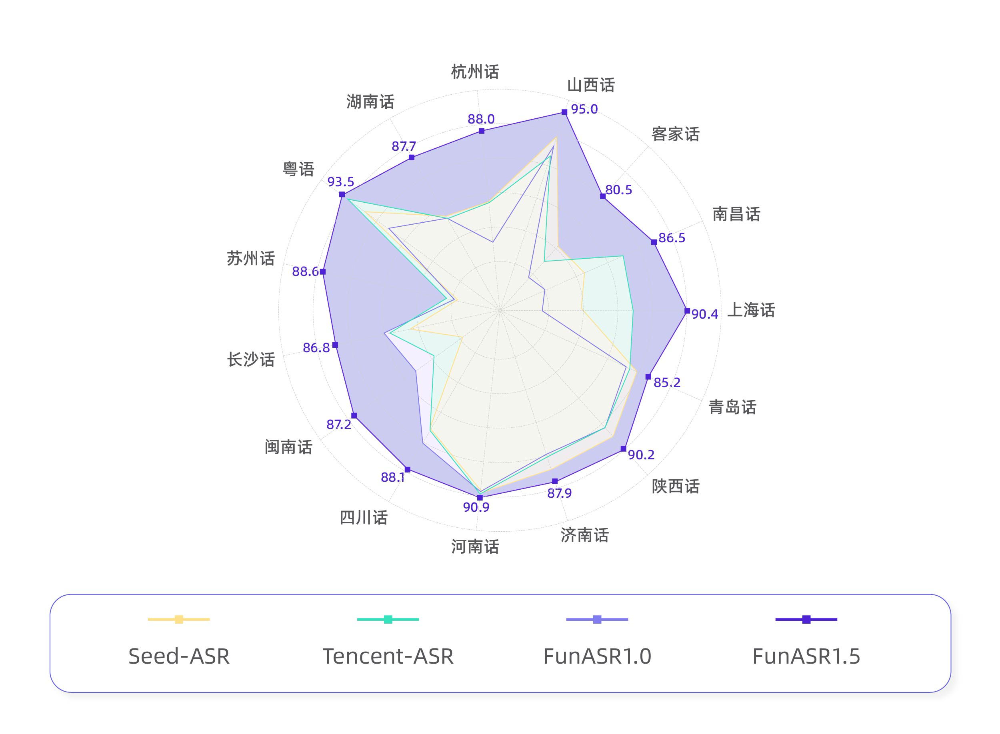
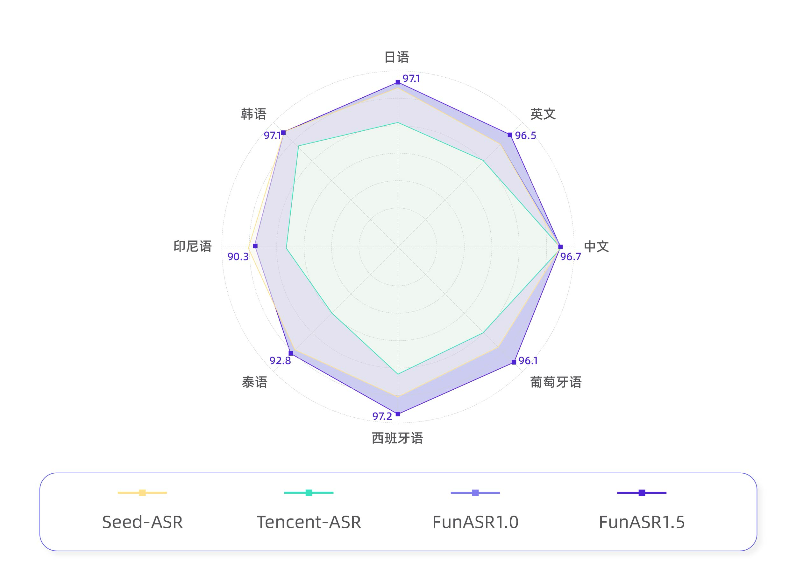

Abstract 摘要
Fun-ASR v1.5 is a 30B-parameter MoE-based end-to-end speech recognition large model launched by Tongyi Laboratory, trained on tens of millions of hours of real speech data. It systematically advances language coverage, dialect recognition depth, and text output quality. The model supports high-precision recognition of 30 languages, fully covers seven major Chinese dialects and over 20 regional accents, and introduces dedicated optimization for classical Chinese poetry recitation, while significantly improving punctuation prediction and text normalization (ITN). v1.5 focuses on three core objectives — "hear more comprehensively, hear more accurately, write more standardized" — further narrowing the performance gap of speech recognition in complex real-world scenarios, providing a smarter and more reliable speech transcription engine for global communication, regional services, and cultural digitization.
Fun-ASR v1.5 是阿里云通义实验室推出的30B参数MoE架构端到端语音识别大模型，基于数千万小时真实语音数据训练，在语言覆盖广度、方言识别深度以及文本输出质量等维度实现系统性跃升。单模型支持30种语言的高精度识别，全面覆盖中文七大主要方言与20余种地方口音，并首次引入对中国历代古诗词诵读内容的专项优化能力，同时显著提升标点预测与文本归一化（ITN）效果。v1.5版本聚焦"听得更全、听得更准、写得更规范"三大目标，进一步缩小语音识别在复杂真实场景中的性能鸿沟，为全球化沟通、区域化服务与文化数字化提供更智能、更可靠的语音转写引擎。

Open-Source Multilingual Benchmark 开源多语言测试集

Industry Dialect Benchmark 工业方言测试集
ASR Capability Demonstrations ASR 能力演示
Click to play and listen to Fun-ASR's recognition performance in different scenarios.
点击播放试听 Fun-ASR 在不同场景下的识别效果。
Classical Chinese Poetry Recognition 古诗词识别专项优化
Fun-ASR v1.5 introduces dedicated optimization for classical Chinese poetry recitation. Classical poetry poses unique challenges: concise classical grammar, strict rhyming and rhythmic patterns, frequent use of典故 (allusions),异体字 (variant characters), and古今异义词 (words with shifted meanings), as well as non-natural speech features like拖腔 (elongated tones), pauses, and吟咏 (chanting). In internal evaluation, v1.5 achieves a character-level accuracy of 97% on classical poetry.
Fun-ASR v1.5 对中文古诗词识别进行了专项优化。不同于现代口语，古诗词具有文言语法简练、押韵严格节奏固定、多用典故异体字古今异义词、诵读时存在拖腔停顿吟咏等非自然语流特征等挑战。在内部评测集中，v1.5 对古诗词的字符级准确率达到 97%。
蓬山此去无多路，青鸟殷勤为探看。
子夏曰，博学而笃志，切问而近思，仁在其中矣。
Chinese Dialect Recognition 中文方言识别
Fun-ASR v1.5 comprehensively supports seven major Chinese dialect systems — Wu, Cantonese, Min, Hakka, Gan, Xiang, and Jin — and covers over 20 regional accents. It also provides dedicated optimization for high-demand local dialects. Trained on over 500,000 hours of real dialect speech data, v1.5 achieves a 56.2% relative reduction in CER compared to the previous version.
Fun-ASR v1.5 不仅完整支持北方官话、吴语、粤语、闽南语、客家话、赣语、湘语七大汉语方言体系，并且支持的口音官话覆盖中原、西南、冀鲁、江淮、兰银、胶辽、东北、北京、港台等 20 多个地区。另外，还针对高需求地方方言进行重点优化。基于超过50万小时真实方言语音数据训练，v1.5 相比上一版本平均字错误率（CER）相对下降 56.2%。
移动呢价钿比较实惠但是网速现在还可以反正也勿是老卡个
可以买点辅导书来，自己假如说会的话也可以教一下小孩子，嗯，现在网络很发达可以。
喝姜茶呢可能有效果，但是如果发展成肺炎了，那你还是要用抗生素的噢。
本来画得挺投入的，结果楼上传来一阵电钻声，把我灵感全吓跑了，还是找邻居商量下吧。
平常辰光匣好教教嗯笃捺亨操作手机，因为倷跟得上时代，时代葛进步，倷再会方便。
但是一个人若是两三两百箍一百外箍安无算贵吧，吼自助餐啊，啊你也有肉咯也有菜咯也有水果咯也有甜点咯，啥物计有咯。
Multilingual Recognition 多语言识别
Fun-ASR v1.5 supports 30 mainstream languages with high-precision recognition, including East Asian & Southeast Asian (Chinese, Japanese, Korean, Vietnamese, Thai, Indonesian, Malay, Filipino), South Asian & Middle Eastern (Hindi, Arabic), and European languages (English, French, German, Spanish, Portuguese, Russian, etc.). It also excels in mixed-language code-switching scenarios without presetting language tags.
Fun-ASR v1.5 支持30种主流语言的精准识别，包括东亚与东南亚（中文、日语、韩语、越南语、泰语、印尼语、马来语、菲律宾语）、南亚与中东（印地语、阿拉伯语）、欧洲主流语言（英语、法语、德语、西班牙语、葡萄牙语、俄语等）。同时在混合语种对话、跨语言自由切换（Code-Switching）场景下表现尤为突出，无需预设语种标签。
私に電話してください。番号は139-1234-5678です。
저는 이 주제에 따라 한 말씀 드리자면, 사실 저희도 이전에 비슷한 상황을 겪은 적이 있습니다.
Kejayaan projek ini tidak dapat dipisahkan daripada usaha pasukan, terutamanya kerja keras siang malam oleh jabatan penyelidikan dan pembangunan.
ความหลากหลายทางวัฒนธรรมเป็นทรัพย์สมบัติล้ำค่าของสังคมมนุษย์ และเราควรเคารพและปกป้องประเพณีวัฒนธรรมทั้งหมด
La diversidad cultural es un tesoro invaluable para la sociedad humana, y debemos respetar y proteger todas las tradiciones culturales.
Mesin pencari perusahaan Google memegang posisi dominan di pasar global.
We've all had that experience of finally visiting a place we've dreamed about for years, only to find that it doesn't quite live up to our expectations. There's even a term for this in one of the most visited cities in the world, Paris Syndrome.何年も前から行きたかった場所をやっと訪れてみたら、思っていたほどではなかったという経験は誰しもあることだと思います。
Smarter Punctuation & Enhanced ITN 文本输出更规范、更易用
1. Smarter Punctuation Prediction 1. 标点预测更加智能
The model automatically inserts commas, periods, question marks, exclamation marks, etc., based on contextual semantics, making transcription results closer to written expression. For example:
模型基于上下文语义自动插入逗号、句号、问号、感叹号等标点，使转写结果接近书面表达。例如：
Input:输入语音： "今天天气怎么样啊我想出去走走但又怕下雨"
Output:输出文本： "今天天气怎么样啊？我想出去走走，但又怕下雨。"
2. Enhanced Text Normalization (ITN) 2. 文本归一化（ITN）表现进一步提升
Automatically converts colloquial non-standard expressions into standard formats:
将口语中的非标准表达自动转换为规范格式：
Numbers:数字： "三千五百六十二" → "3562"
Dates:日期： "二零二六年三月二十九号" → "2026年3月29日"
Amounts:金额： "五万八千块" → "58000元"
Phone:电话： "幺三八零零幺三八零零零" → "13800138000"
These improvements significantly reduce post-editing costs, particularly suitable for meeting minutes generation, news interview transcription, and legal records where text standardization is required. 这些改进大幅降低后期编辑成本，特别适用于会议纪要生成、新闻采访整理、法律笔录等对文本规范性要求高的场景。
BibTeX 文献引用
@misc{an2025funasrtechnicalreport,
title={Fun-ASR Technical Report},
author={Keyu An and Yanni Chen and Zhigao Chen and Chong Deng and Zhihao Du and Changfeng Gao and Zhifu Gao and Bo Gong and Xiangang Li and Yabin Li and Ying Liu and Xiang Lv and Yunjie Ji and Yiheng Jiang and Bin Ma and Haoneng Luo and Chongjia Ni and Zexu Pan and Yiping Peng and Zhendong Peng and Peiyao Wang and Hao Wang and Haoxu Wang and Wen Wang and Wupeng Wang and Yuzhong Wu and Biao Tian and Zhentao Tan and Nan Yang and Bin Yuan and Jieping Ye and Jixing Yu and Qinglin Zhang and Kun Zou and Han Zhao and Shengkui Zhao and Jingren Zhou and Yanqiao Zhu},
year={2025},
eprint={2509.12508},
archivePrefix={arXiv},
primaryClass={cs.CL},
url={https://arxiv.org/abs/2509.12508},
}